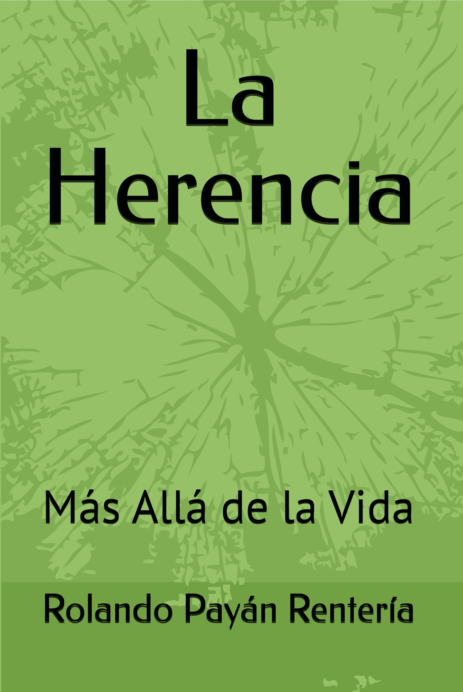

SINOPSIS DEL LIBRO
LA HERENCIA MÁS ALLA DE LA VIDA.
El libro La Herencia, Más Allá de la Vida narra la historia de vida del autor, iniciando desde temprana edad, donde se describe el incidente con un gallo de pelea que se encontraba en el corral de la casa. Después, en varias ocasiones me hacía preguntas frente a un espejo: ¿Quién soy Yo? ¿Cuál es mi misión en la Tierra? ¿A qué he venido a este mundo?, sin tener respuesta.
Durante la niñez se presentaron situaciones adversas de tipo emocional, entre ellas las derivadas de la expresión oral, fortaleciendo otras habilidades como el estudio, la escritura, la comprensión y el gran humanismo a los demás.
En el libro se narra la conexión con Maestros Espirituales que me otorgaron el grado de Doctor Honoris Causa en el área de Psicología, de una Universidad en Rostock.
De igual manera con David que me otorgó el poder sanación; Paracelso sobre destilación de plantas con fines terapeúticos; Nícolas Flamel del poder de la Piedra Filosofal y Tutankamón de tesoros ocultos, entre otros.
Derivado del incidente del gallo, al tiempo me puse a investigar cuál sería el mensaje, encontrando que el gallo ha tenido diferentes significados espirituales a lo largo de la historia y en la simbología cristiana es considerado como Heraldo del Alba y una representación de la resurrección.

Top